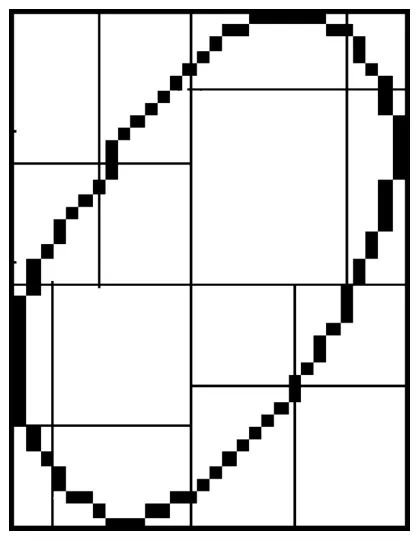
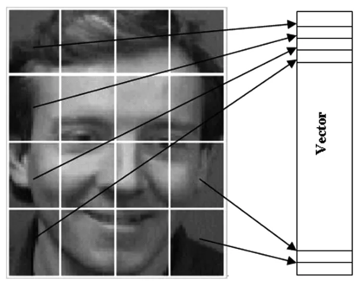
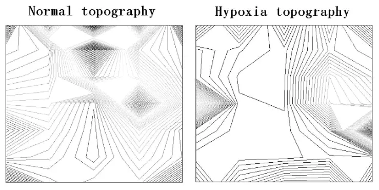
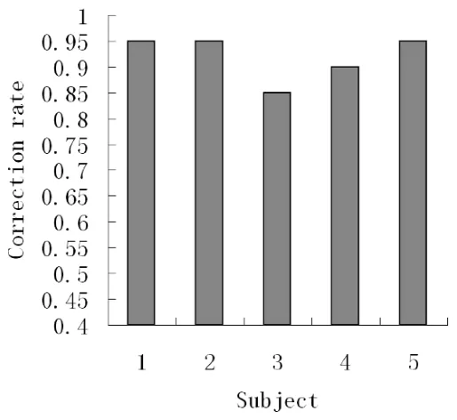
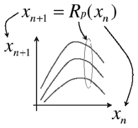
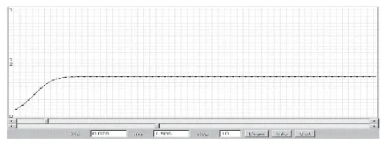
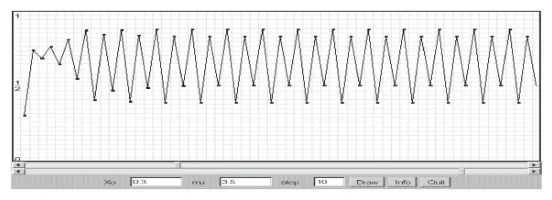
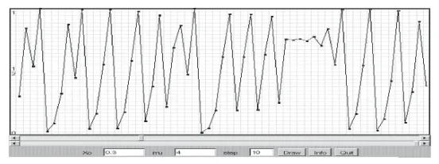
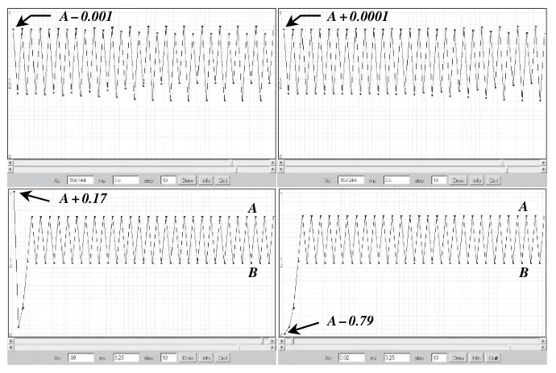

Phần II · Bài 11 — Ứng dụng kỹ thuật của mô hình khứu giác đến khứu giác nhân tạo
Khi kết thúc quá trình huấn luyện, các trọng số kết nối của mô hình KIII được cố định để thực hiện các kiểm thử phân loại mẫu. Trong quá trình huấn luyện, một số mẫu cho mỗi lớp được đưa vào. Biên độ của N đầu ra hoạt động được đo và biểu diễn dưới dạng vector đặc trưng cho mỗi lần thử, cũng như hoạt động trung bình của những lần thử thuộc cùng một lớp. Vector đặc trưng xác định một điểm trong không gian N chiều (ở đây sử dụng N = 64); một tập hợp các lần thử huấn luyện với cùng một lớp kích thích tạo thành một cụm điểm trong không gian N chiều; giá trị trung bình được định nghĩa là trọng tâm của cụm đại diện cho lớp đó. Đầu vào của các lớp khác nhau mà hệ thống được huấn luyện để phân biệt tạo thành nhiều cụm vector đặc trưng, mỗi cụm có trọng tâm riêng.
Khi một mẫu kiểm thử được đưa vào, vector đặc trưng của nó được tính toán. Khoảng cách Euclid từ điểm tương ứng của vector đặc trưng đến các tâm cụm mẫu huấn luyện đó được tính toán, và khoảng cách tối thiểu đến một tâm sẽ quyết định sự phân loại.
Để đảm bảo phân loại đúng, thông thường một ngưỡng được đưa vào. Khi hiệu giữa khoảng cách Euclid tối thiểu và khoảng cách tối thiểu thứ hai nhỏ hơn giá trị ngưỡng, lần thử đó được coi là nhận dạng thất bại.
3.2 Các Quy tắc Học
Đối với mạng KIII, có ba quá trình học chính: học liên kết Hebb, quen nhờn (habituation) và chuẩn hóa. Học Hebb dưới sự tăng cường thiết lập các lưu vực ký ức và tập hút của các mẫu phân loại, trong khi quen nhờn được sử dụng để giảm tác động của nhiễu môi trường bao gồm các đầu vào nền không mang thông tin tới mạng KIII. Chuẩn hóa toàn cục được sử dụng để duy trì sự ổn định của mạng KIII trong dài hạn trước những thay đổi về trọng số synap vốn thường làm tăng cường độ các kết nối kích thích trong quá trình liên kết và làm giảm chúng trong quá trình quen nhờn. Chuẩn hóa bao gồm việc sửa đổi quy tắc Hebb bằng cách áp đặt một cường độ kích thích lẫn nhau tối đa để ngăn chặn sự gia tăng mất kiểm soát, và bằng cách yêu cầu rằng sự gia tăng Hebb chỉ xảy ra khi có sự tăng cường. Quen nhờn mặt khác diễn ra tự động khi không có sự tăng cường.
Khi một sợi trục của tế bào A đủ gần để kích thích tế bào B và lặp đi lặp lại hoặc liên tục tham gia vào việc kích hoạt nó, một số quá trình tăng trưởng hoặc thay đổi chuyển hóa diễn ra ở một hoặc cả hai tế bào sao cho hiệu quả của A, với tư cách là một trong những tế bào kích hoạt B, được tăng lên [15]. Các nguyên lý làm nền tảng cho phát biểu này được biết đến với tên gọi Học Hebb (Hebbian Learning). Trong chủ nghĩa kết nối, học Hebb là một thuật toán huấn luyện không giám sát trong đó cường độ synap (trọng số) được tăng lên nếu cả nơ-ron nguồn và nơ-ron đích đều hoạt động cùng một lúc. Theo các yêu cầu cụ thể của chúng tôi, chúng tôi đã thực hiện một số sửa đổi trong quy tắc học Hebb: 1) chúng tôi đã thiết kế hai phương pháp để tăng cường độ kết nối được mô tả dưới đây; 2) chúng tôi đã đưa vào một hệ số thiên lệch K cho quá trình học.
Trong các thực nghiệm của chúng tôi, quy tắc Hebb sửa đổi cho rằng mỗi cặp nút M được kích hoạt đồng thời bởi kích thích sẽ có các kết nối ngang của chúng, ω(mml)ij , được củng cố. Ở đây ω(mml)ij đại diện cho các trọng số kết nối cả từ Mi đến Mj và từ Mj đến Mi. Những nút có hoạt động lớn hơn hoạt động trung bình của lớp OB được coi là được kích hoạt; những nút có mức hoạt động nhỏ hơn trung bình được coi là không được kích hoạt. Ngoài ra, để tránh sự bão hòa của không gian trọng số, một hệ số thiên lệch K được định nghĩa trong quy tắc học Hebb sửa đổi, như trong (5)
NẾU SDαi > (1 + K)SDm
α VÀ SDαj < (1 + K)SDm α
THÌ ω(mml)ij = w(mml)high, Thuật toán 1
(5)
NGƯỢC LẠI ω(mml)ij = r ⋆ω(mml)ij , Thuật toán 2
Hai thuật toán để tăng trọng số kết nối được trình bày; thuật toán 1 là đặt giá trị thành một giá trị cao cố định w(mml)high như trong các tài liệu tham khảo trước đây và trong thuật toán 2, ω(mml)ij được nhân với một hệ số r(r > 1) để biểu thị sự tăng cường Hebb.
Đối với học quen nhờn, sự sụt giảm ở các synap đầu ra kích thích xảy ra liên tục tại mỗi thời điểm trình diễn kích thích (không phải bước số hóa) đối với mọi nút nhận đầu vào mà không có sự tăng cường. Không giống như học Hebb, sự sụt giảm này không đòi hỏi kích hoạt theo cặp, và nó có thể đảo ngược. Ví dụ, đối với tham số quen nhờn liên tục hhab = 0,9995 và khoảng thời gian mô phỏng 400 ms, nếu trọng số kết nối không bị ảnh hưởng bởi bất kỳ quy tắc học nào khác, nó sẽ giảm với tốc độ quen nhờn hhab và đạt 0,9995400 = 0,819 giá trị ban đầu vào cuối khoảng thời gian mô phỏng này.
Vào cuối phiên huấn luyện cho cả 3 loại học, các trọng số kết nối được cố định để thực hiện các kiểm thử phân loại mẫu.
4 Kết quả
4.1 Phân loại Chữ số Viết tay
Nhận dạng tự động các ký tự viết tay là một bài toán thực tế trong lĩnh vực nhận dạng mẫu nên nó được chọn để kiểm thử hiệu suất phân loại của mạng KIII [14].
4.1.1 Trích xuất Đặc trưng
Tập dữ liệu kiểm thử chứa 200 mẫu trong 20 nhóm ký tự số viết tay do 20 sinh viên khác nhau viết. Một nhóm bao gồm 10 ký tự từ không đến chín. Trong ứng dụng này, mạng KIII 64 kênh được sử dụng với các tham số hệ thống như [2]. Mỗi lần thử mô phỏng cho dù để huấn luyện hay phân loại đều kéo dài 400 ms, trong khi 100 ms đầu tiên là giai đoạn ban đầu mà mạng KIII đi vào trạng thái cơ sở của nó. Đầu vào tồn tại trong 200–300ms. Mọi ký tự trong dữ liệu kiểm thử đều được tiền xử lý để thu được vector đặc trưng 1 × 64 và đặt một điểm trong không gian đặc trưng 64 chiều. Quá trình tiền xử lý gồm hai bước. Bước đầu tiên bao gồm cắt ảnh, loại bỏ nhiễu và thao tác ‘làm mảnh’ (thin - một phương pháp xử lý ảnh số giúp thu nhỏ một vật thể xuống nét kết nối tối thiểu của nó). Mọi ký tự được chọn ra và biến đổi thành các đường khung xương của nó [10, 17]. Bước thứ hai là trích xuất đặc trưng. Ảnh ký tự thu được sau bước tiền xử lý đầu tiên trước hết được chia thành 2 × 2 = 4 vùng chữ nhật nhỏ theo tâm khối lượng pixel của nó. Tương tự như bước trước, mỗi vùng chữ nhật nhỏ được chia thành 2 × 2 = 4 hình chữ nhật nhỏ hơn, do đó toàn bộ ký tự được tách thành 4 × 4 = 16 vùng chữ nhật, như thể hiện trong Hình 6. Trong mỗi vùng nhỏ, tỷ lệ của bốn loại đường theo bốn hướng khác nhau được tính toán. Do đó, 64 đặc trưng được đưa làm đầu vào cho mạng KIII dưới dạng mẫu kích thích ở dạng vector đặc trưng 1 × 64.
4.1.2 Kết quả Thực nghiệm
Theo phương pháp đo hoạt động của mạng KIII như mô tả trong Mục 3.2, khoảng thời gian có các mẫu kích thích được chia thành 5 phân đoạn để tính toán hoạt động của các nút với mỗi phân đoạn kéo dài 40 ms. Vì có 10 mẫu liên quan lẫn nhau để phân loại, thuật toán 2 cho quy tắc học Hebb được chọn cho bài toán phân loại này với hệ số thiên lệch K = 0,4. Các giá trị s = 5 và
K = 0,4 được chọn dựa trên các thực nghiệm trước đây về ứng dụng mô hình KIII [7]. Tốc độ tăng r được đặt thành 1,2. Chúng tôi chọn 1,2 một cách tùy ý trong khoảng

Hình 6 Một ví dụ về phân đoạn chữ số viết tay
(1,0, 1,5). Nếu r > 1,5, ω(mml)ij sẽ nhanh chóng trở nên quá lớn và do đó, mô hình KIII không thể hoạt động bình thường như một bộ phân loại. Hơn nữa, giá trị ngưỡng đã đề cập ở trên được đặt bằng một phần hai mươi khoảng cách giữa trọng tâm cụm dữ liệu kiểm thử và trọng tâm cụm dữ liệu huấn luyện. Trong các thực nghiệm của mình, chúng tôi có tổng cộng 200 nhóm ký tự số viết tay. Mỗi nhóm gồm mười ký tự (từ ′0′ đến ′9′). Chúng tôi chọn ngẫu nhiên 10 nhóm trong số đó để huấn luyện và sử dụng tất cả 200 nhóm để phân loại.
Hơn nữa, chúng tôi đã so sánh tỷ lệ phân loại của mình với các tỷ lệ thu được bằng cách sử dụng các loại mạng nơ-ron nhân tạo (ANN) truyền thống sau đây: bộ lọc tuyến tính, perceptron hai lớp và mạng Hopfield, để phân loại cùng các ký tự số viết tay này. Việc lựa chọn tập huấn luyện và tập kiểm thử đều giống như trong các thực nghiệm của KIII. Bộ lọc tuyến tính rất đơn giản và có khả năng phân loại rất hạn chế. Nó bao gồm 64 nơ-ron đầu vào và 10 nơ-ron đầu ra, tương ứng với 64 đặc trưng đầu vào và 10 lớp đầu ra, trong khi hàm truyền Purelin được sử dụng. Quy tắc Học Windrow-Hoff, một phương pháp Bình phương Tối thiểu Trung bình, đã được sử dụng để huấn luyện [9]. Trong perceptron hai lớp, chúng tôi sử dụng hai lớp perceptron: một lớp đầu vào gồm 64 nơ-ron và một lớp đầu ra gồm 10 nơ-ron. Lớp đầu vào sử dụng hàm truyền log-sigmoid và lớp đầu ra sử dụng hàm truyền tuyến tính. Chúng tôi lấy mỗi cột của ma trận đơn vị 10 × 10 làm đầu ra mục tiêu của perceptron hai lớp, tương ứng với một loại ký tự số trong tập huấn luyện. (tức là cột thứ 1 tương ứng với ký tự ‘0′, v.v.) Các giá trị trọng số và độ lệch trong perceptron hai lớp được cập nhật theo tối ưu hóa Levenberg-Marquardt với tất cả các tốc độ học được đặt thành 0,01. Mạng Hopfield không có quy luật học gắn liền với nó. Nó không được huấn luyện, cũng không tự học. Thay vào đó, một quy trình thiết kế dựa trên hàm Lyapunov đã được sử dụng để xác định ma trận trọng số. Chúng tôi coi vector cột trong tập huấn luyện, tức là ma trận 64 × 10, là tập hợp các điểm ổn định trong mạng và thiết kế một mạng Hopfield với một lớp duy nhất sử dụng hàm truyền tuyến tính bão hòa đối xứng. Quy trình kiểm thử của perceptron hai lớp và mạng Hopfield rất giống nhau. Sau khi đưa tập đầu vào kiểm thử vào mạng, chúng tôi so sánh đầu ra của mạng với các vector mục tiêu được thiết kế trước. Vector mục tiêu có phương sai tối thiểu với vector đầu ra sẽ xác định hạng mục mà tập kiểm thử thuộc về.
Bảng 1 cho thấy sự so sánh kết quả kiểm thử phân loại. Lấy mức nhiễu làm tham số, ảnh hưởng của mức nhiễu đến hiệu suất phân loại của mạng KIII đã được khảo sát. Vì mẫu kích thích, được coi là tín hiệu, bao gồm các giá trị đặc trưng tương ứng có phạm vi từ 0 đến 1, độ lệch chuẩn của nhiễu Gaussian được thêm vào tại vị trí thụ thể được định nghĩa là tỷ lệ nhiễu/tín hiệu. Các kiểm thử lặp lại được thực hiện khi mức nhiễu tăng lên. Kết quả (Hình 7) cho thấy khi mức nhiễu tăng lên, tỷ lệ phân loại đúng của mạng KIII tăng lên đến một mức bình nguyên rồi giảm xuống. Trong công trình trước đây của Kozma [7], một tỷ lệ nhiễu/tín hiệu tối ưu đã được tìm thấy cho hiệu suất phân loại tốt nhất của KIII, được đặt tên là ‘cộng hưởng hỗn loạn’ (chaotic resonance) so với cộng hưởng ngẫu nhiên. Tuy nhiên, trong kết quả này, dường như rất khó để tìm thấy một tỷ lệ nhiễu/tín hiệu tối ưu rõ ràng. Tỷ lệ phân loại đúng của mạng KIII vẫn duy trì trên 90% khi tỷ lệ nhiễu/tín hiệu thay đổi
Bảng 1 Kết quả phân loại – sử dụng KIII
Mẫu Đúng Sai Thất bại Độ tin cậy
0 196 3 1 98.49 1 185 10 5 94.87 2 192 4 4 97.96 3 177 12 11 93.65 4 179 11 10 94.21 5 181 7 12 96.28 6 191 1 8 99.48 7 189 7 4 96.43 8 174 9 17 95.08 9 186 9 5 95.38 Tổng 1850 73 77 96.20
Tỷ lệ 92.5 3.65 3.85 96.20
từ 40% đến 160%. Kết quả này chỉ ra rằng hiệu suất của mạng KIII không nhạy cảm với mức nhiễu trong một phạm vi tương đối rộng.
4.2 Nhận dạng Khuôn mặt
Nhận dạng khuôn mặt đóng một vai trò quan trọng trong nhiều ứng dụng, chẳng hạn như nhận dạng tội phạm, xác minh thẻ tín dụng, hệ thống an ninh, giám sát hiện trường, v.v. Để tối ưu hóa hiệu suất, nhiều thuật toán trích xuất đặc trưng được
96
94
92
Tỷ lệ phân loại đúng (%)
90
88
86
84
82
80
78
20 40 60 80 100 120 140 160 180 200 76
Tỷ lệ Nhiễu/Tín hiệu (%)
Hình 7 Hiệu suất phân loại của KIII ở các mức nhiễu khác nhau
Bảng 2 Kết quả phân loại – so sánh
Độ tin cậy
Mẫu Bộ lọc tuyến tính Perceptron Hopfield KIII
0 74.50 100 59.79 98.49 1 55.85 89.5 78.89 94.87 2 71.0 53.68 78.42 97.96 3 35.5 67.37 79.87 93.65 4 39.44 44.13 41.99 94.21 5 48.73 49.36 21.17 96.28 6 83.5 69.95 89.23 99.48 7 58.59 51.59 64.0 96.43 8 76.53 46.88 87.93 95.08 9 64.06 63.5 64.29 95.38
Trung bình 60.99 64.84 66.76 96.20
áp dụng, chẳng hạn như PCA, ICA, v.v. cũng như khoảng cách láng giềng gần nhất, thống kê Bayes và SVM được sử dụng làm bộ phân loại.
Để kiểm tra xem KIII có nhạy cảm với một vector đặc trưng nhất định hay không, KIII được sử dụng để phân loại ảnh khuôn mặt dựa trên các vector đặc trưng khác nhau được trích xuất [16].
4.2.1 Trích xuất Đặc trưng
Để trích xuất một vector đặc trưng từ toàn bộ ảnh, chúng tôi chia ảnh gốc thành các ảnh con và trích xuất đặc trưng của từng ảnh con từ toàn bộ ảnh con đó. Sau đó, các đặc trưng được kết hợp lại để tạo thành toàn bộ vector đặc trưng của ảnh gốc, Hình 8. Trong mô phỏng của chúng tôi, các ảnh khuôn mặt được chia riêng lẻ thành 8, 16, 32, 64 và 80 ảnh con. Phép biến đổi cosin rời rạc (DCT), phân tích giá trị kỳ dị (SVD) và biến đổi gói sóng nhỏ (WPT) lần lượt được sử dụng để trích xuất vector đặc trưng từ ảnh khuôn mặt.
2-DCT có thể tập trung phần lớn năng lượng tín hiệu ở góc trên bên trái. Trong Hình 9, (a) là ảnh khuôn mặt gốc, (b) là ảnh tái tạo không loại bỏ bất kỳ hệ số nào, (c) là ảnh tái tạo sau khi loại bỏ khoảng 90% hệ số và (d) là ảnh tái tạo chỉ loại bỏ một hệ số cực đại. Chúng tôi chọn hệ số lớn nhất làm đặc trưng của ảnh con.
Trong SVD, các giá trị kỳ dị tạo thành một vector đặc trưng n chiều và có thể được sử dụng để thay thế ảnh khuôn mặt. Trong Hình 10, trục X biểu thị 10 giá trị kỳ dị lớn trong mỗi ảnh con, và trục Y biểu thị số lượng đặc trưng (8 ×|yi|, tức là 8, 16, 24, v.v.). Trục Z biểu thị tỷ lệ của mỗi giá trị kỳ dị trên tổng tất cả các giá trị kỳ dị sau SVD được tính trung bình trên tất cả các ảnh con. Trong mô phỏng, giá trị kỳ dị lớn nhất, chứa phần lớn năng lượng của ảnh, được chọn làm đặc trưng.
WPT của ảnh tạo ra một mảng các hệ số sóng nhỏ trong các dải tần số khác nhau. WPT hai mức được sử dụng để tính toán các hệ số, và chuẩn (norm) của tất cả các hệ số ở dải tần số thấp nhất trong các dải con được chọn làm đặc trưng.

Hình 8 Xây dựng một vector đặc trưng
(a) (b)
(c) (d)
Hình 9 So sánh ảnh khuôn mặt được xử lý bằng DCT
0.8
0.7
1
0.6
0.8
0.5
0.6
Z: Tỷ lệ
0.4
0.4
0.3
0.2
0.2
8 0
0
6
0.1
4
5
2
Y: Số lượng đặc trưng
10 0
X: 10 giá trị kỳ dị lớn nhất
Hình 10 Phân bố năng lượng trong SVD
Từ Hình 11, có thể thấy rằng phần lớn năng lượng của ảnh tập trung ở dải tần số thấp nhất.
4.2.2 Kết quả Phân loại
Tập dữ liệu khuôn mặt ORL được sử dụng để đánh giá hiệu suất. Năm ảnh của mỗi người được chọn để huấn luyện và các ảnh khác được dùng để kiểm thử. So với các ANN khác, mỗi mẫu chỉ được học 10 lần trong KIII. Đầu ra của lớp OB được lưu trữ làm chuẩn nhận thức. Và nguyên lý láng giềng gần nhất được sử dụng để phân loại các ảnh mới. Bảng 3 cho thấy số chiều của vector đặc trưng càng cao thì hiệu suất càng tốt. Đặc trưng dựa trên DCT có vẻ tốt hơn một chút, nhưng bộ phân loại dựa trên SVD/WPT có vẻ ổn định hơn.
4.3 Phân loại EEG Bình thường và Thiếu oxy
Hỗn hợp nitơ và oxy ở áp suất khí quyển bình thường, mô phỏng khí quyển ở các độ cao khác nhau bằng cách điều chỉnh áp suất riêng phần của oxy, được cung cấp cho các đối tượng qua mặt nạ phi công. Vào ngày đầu tiên, khi đối tượng ở trong khí quyển bình thường, người đó thực hiện các bài kiểm tra khoảng nhớ chữ số thính giác và cộng/trừ liên tiếp trong khi EEG của người đó được ghi lại. Vào ngày thứ hai, sau khi đối tượng ở trong môi trường mô phỏng độ cao 3500m trong 25 phút, họ lặp lại quy trình kiểm tra trước đó.
Phân bố Năng lượng
0.8
1
0.7
0.6
0.8
0.5
0.6
Z:Tỷ lệ
0.4
0.4
0.3
0.2
0.2
0 5 10 15 20 2 4 6 0
0.1
X:Các Hệ số Khác nhau
Y:Số lượng Đặc trưng Khác nhau
Hình 11 Phân bố năng lượng trong WPT
Thực nghiệm được thực hiện vào cùng một thời điểm mỗi ngày. Năm tình nguyện viên nam khỏe mạnh khoảng 22 tuổi được chọn làm đối tượng. Các tập dữ liệu bình thường và 3500m bao gồm các tín hiệu EEG dài 1,5 giây ngay sau khi đánh giá hành vi thần kinh. Dữ liệu EEG được thu từ 30 Kênh bao gồm: FP1, FP2, F7, F3, FZ, F4, F8, FT7, FC3, FCZ, FC4, FT8, T3, C3, CZ, C4, T4, TP7, CP3, CPZ, CP4, TP8, T5, P3, PZ, P4, T6, O1, OZ, O2 (hệ thống 10/20). Tham chiếu là (A1+A2)/2 (A1 = xương chũm trái, A2 = xương chũm phải). Bộ khuếch đại EEG được sử dụng là Bộ khuếch đại Kỹ thuật số NuAmps (Model 7181) mua từ Neuroscan Compumedics Ltd, Texas, Hoa Kỳ. Tốc độ lấy mẫu là 250 mẫu/giây. Tất cả các giá trị tính bằng μV [12].
4.3.1 Đánh giá Tình trạng Thiếu oxy
Để đánh giá mức độ thiếu oxy, đánh giá hành vi thần kinh (NE), là một công cụ nhạy bén và đáng tin cậy để phát hiện sớm các tác động bất lợi của
Bảng 3 Tỷ lệ nhận dạng đúng của nhận dạng khuôn mặt
Số lượng Đặc trưng
Phương pháp 8 16 32 48 64 80
SVD 69.3% 81.5% 88.3% 90.0% 90.8% 91.0% DCT 67.0% 82.0% 88.5% 90.0% 91.5% 91.0% WPT 69.5% 81.8% 87.3% 89.8% 90.8% 89.8% các mối nguy hại môi trường lên hệ thần kinh trung ương, đã được sử dụng. Trong các thực nghiệm mô phỏng độ cao bình thường và 3500m, khoảng nhớ chữ số thính giác và phép cộng trừ liên tiếp được dùng để đánh giá mức độ thiếu oxy. Kết quả kiểm tra được trình bày trong Bảng 4. Kiểm định T-test đã được thực hiện cho hai mục của NE. Kết quả là, điểm NE của trạng thái bình thường và thiếu oxy khác biệt rõ rệt (p < 0,05) ở cả hai mục. Hơn nữa, điểm số trong điều kiện thiếu oxy thấp hơn rõ rệt. Theo kết quả của NE, việc năng lực hành vi của đối tượng trong điều kiện thiếu oxy yếu hơn đáng kể so với điều kiện bình thường cho thấy mẫu hình do thiếu oxy gây ra đã hình thành.
4.3.2 Trích xuất Đặc trưng
Biểu diễn sóng nhỏ của một dạng sóng điện thần kinh có tính khả nghịch, nghĩa là dạng sóng gốc có thể được tái tạo từ một tập hợp các hệ số phân tích nắm bắt toàn bộ thông tin thời gian (hoặc không gian) và tần số trong dạng sóng. Sự linh hoạt cao hơn trong việc xác định các dải tần số của một phép phân rã có thể đạt được bằng cách sử dụng một dạng tổng quát hóa của sóng nhỏ được gọi là gói sóng nhỏ (wavelet packets). Việc lựa chọn sóng nhỏ phù hợp và số mức phân rã rất quan trọng trong phân tích tín hiệu bằng WPT. Trong phân tích của chúng tôi, chúng tôi sử dụng sóng nhỏ COIF5. Số mức phân rã được chọn là hai và các hệ số cây gói sóng nhỏ của dải con 30–60Hz được trích xuất. Vector đặc trưng là một vector 30 chiều do có 30 kênh EEG. Đối với mỗi kênh, bình phương của các hệ số cây gói sóng nhỏ được cộng lại thành một chiều của vector đặc trưng. Theo cấu trúc liên kết của kênh EEG, mỗi vector đặc trưng có thể được chuyển đổi thành một bản đồ địa hình đặc trưng. Một mẫu bản đồ địa hình đặc trưng điển hình so sánh EEG bình thường và thiếu oxy thu thập từ cùng một đối tượng được minh họa trong Hình 12.
4.3.3 Kết quả Phân loại
Trong bài viết này, chúng tôi sử dụng mô hình KIII để phân loại EEG bình thường và thiếu oxy. Chúng tôi huấn luyện mạng KIII bằng kiểm chứng chéo 2 lần. Mô hình KIII học các mẫu mong muốn — các mẫu EEG bình thường và thiếu oxy lần lượt ba lần. Tập dữ liệu kiểm thử
Bảng 4 Điểm đánh giá hành vi thần kinh của các đối tượng
Khoảng nhớ Chữ số Thính giác Cộng và Trừ
Đối tượng Bình thường Thiếu oxy Bình thường Thiếu oxy
Số 1 30 29 28 21 Số 2 28 24 31 26 Số 3 25 21 20 20 Số 4 32 23 24 15 Số 5 19 9 24 12 Trung bình 26.8 21.2 24.2 16.8

Hình 12 Một bản đồ địa hình đặc trưng điển hình
chứa 80 mẫu EEG bình thường và thiếu oxy cho từng cá nhân bởi 5 đối tượng khác nhau. Chúng tôi chọn ngẫu nhiên 40 nhóm mẫu ở vị trí lẻ để huấn luyện và sử dụng tất cả 80 nhóm mẫu để phân loại, sau đó chúng tôi chọn 40 mẫu ở vị trí chẵn để huấn luyện và sử dụng tất cả 80 mẫu để phân loại. Tỷ lệ chính xác cuối cùng là trung bình của hai lần tỷ lệ chính xác. Trong ứng dụng này, mạng KIII 30 kênh được sử dụng với các tham số hệ thống. Các giá trị s = 5, K = 0,4 và r = 1,25 được chọn dựa trên các thực nghiệm trước đây về ứng dụng của mô hình KIII. Vector đặc trưng được nạp vào lớp R của mô hình KIII được tính toán để phân loại các mẫu đầu vào. Chỉ khi hiệu giữa các khoảng cách Euclid từ mẫu đầu vào mới đến hai loại mẫu đã lưu trữ đạt đến ngưỡng xác định trước, việc phân loại mới được coi là hợp lệ và có tính thuyết phục. Các kết quả thực nghiệm được trình bày trong Hình 13. Thực tế, giá trị trung bình của tỷ lệ phân loại cho tập dữ liệu kiểm thử bằng 92%. Rõ ràng, EEG thiếu oxy có thể được nhận dạng từ EEG bình thường bằng mạng KIII. Nói cách khác, một mẫu hình mới trong EEG, khác với mẫu bình thường, đã hình thành do tình trạng thiếu oxy gây ra. Kết luận của việc phân loại EEG nhất quán với NE. Tỷ lệ chính xác tối thiểu (85%) là từ đối tượng SỐ 3 bằng mạng KIII. Đồng thời, ngoại trừ đối tượng SỐ 3, điểm số NE trong điều kiện thiếu oxy thấp hơn hoàn toàn so với điều kiện bình thường. Điểm số cộng và trừ liên tiếp của NE từ đối tượng SỐ 3 không thay đổi trong điều kiện bình thường và thiếu oxy. Kết quả của EEG và NE thực sự thống nhất. Ở một mức độ nào đó, tỷ lệ chính xác của mạng KIII đại diện cho mức độ thiếu oxy và xác suất xuất hiện mẫu thiếu oxy. Nó mở ra khả năng phát hiện định lượng tình trạng thiếu oxy.

Hình 13 Kết quả phân loại EEG
4.4 Nhận dạng Trà
ANN thường được coi là phương pháp nhận dạng mẫu hứa hẹn nhất để xử lý tín hiệu từ mảng cảm biến hóa học của mũi điện tử. Đặc biệt, khi mô hình hóa khứu giác sinh học, mô hình KIII nên phù hợp hơn cho khứu giác nhân tạo nhờ khả năng khái quát hóa mạnh mẽ giúp hệ thống mang tính sinh học hơn [8]. Ở đây mô hình KIII được một mũi điện tử sử dụng để phân loại các loại trà khác nhau.
4.4.1 Thu thập Dữ liệu
Một mảng cảm biến, bao gồm 7 cảm biến bán dẫn oxit kim loại (MOS) (TGS2610, TGS2611, TGS800, TGS813, TGS822, TGS826, TGS880 từ Công ty Figaro), được chế tạo để bắt chước niêm mạc khứu giác. Mỗi mẫu trà được làm nóng trên bộ gia nhiệt ổn nhiệt trong 10 phút trước khi thu thập dữ liệu. Các chất bay hơi phát ra từ trà được mảng cảm biến cảm nhận [18]. Khi tiếp xúc với các chất bay hơi, độ dẫn điện của cảm biến MOS thay đổi gây ra sự thay đổi dòng điện chạy qua cảm biến MOS khi cung cấp một điện áp không đổi. Sự thay đổi mức dòng điện là một hàm đã biết của nồng độ chất bay hơi. Một đáp ứng điển hình được ghi lại từ mảng cảm biến được thể hiện trong Hình 14.
Đối với mỗi loại trà, 33 lần kiểm thử đã được thực hiện, 3 tập dữ liệu để huấn luyện và 30 tập dữ liệu còn lại để kiểm thử.
300
250
200
I(uA)
150
100
50
0 50 100 150 200 250 300 350 400 0 thời gian (giây)
Hình 14 Một đáp ứng điển hình của mảng cảm biến
4.4.2 Trích xuất Đặc trưng
Dựa theo điện thế không đổi được cung cấp và dòng điện đo được trong các lần kiểm thử, điện trở của các cảm biến MOS có thể được tính toán. Để giảm ảnh hưởng của sự dao động nồng độ lên việc phân loại, một phương pháp chuẩn hóa được sử dụng. Logarit của điện trở chuẩn hóa, ln(R), ở trạng thái ổn định được tính cho mỗi cảm biến. ln(Ri), trong đó i = 1, 2, ..., 7 biểu thị 7 cảm biến, tạo thành một vector đặc trưng.
4.4.3 Kết quả Thực nghiệm
Lúc này, một mạng nơ-ron nhân tạo thông thường, mạng BP, được thực hiện để so sánh. Mạng BP bao gồm một lớp đầu vào gồm 7 nơ-ron, một lớp ẩn gồm 6 nơ-ron và một lớp đầu ra gồm 4 nơ-ron. Bảng 5 trình bày kết quả phân loại.
Bảng 5 Tỷ lệ chính xác khi phân loại bốn loại trà
Trà Xanh Trung Quốc Trà Xanh Nhật Bản Trà Đen Ấn Độ Trà Đen Trung Quốc Trung bình
KIII 86.7% 93.3% 93.3% 80.0% 88.3% BP 100% 80.0% 66.7% 93.3% 85.0% Con người 46.7% 80.0% 83.3% 50.0% 65.0% Rõ ràng là mạng BP và mạng KIII đều hiệu quả. Tuy nhiên, tỷ lệ phân loại của mô hình KIII ổn định hơn một chút. Tỷ lệ phân loại tối đa của BP là 100%, nhưng tối thiểu giảm xuống còn 66,7%. Trong khi đó đối với mạng KIII, nó dao động từ 80% đến 93,3%.
5 Thảo luận và Kết luận
Có hai điểm cần lưu ý trong việc khám phá khả năng phân loại của mạng KIII bằng cách áp dụng nó vào nhận dạng mẫu: trích xuất đặc trưng và quy tắc học. Mặc dù không gian đặc trưng được sử dụng trong các thực nghiệm của chúng tôi như thường được dùng trong bài toán thực tế của nhận dạng mẫu, đôi khi người ta tin rằng không gian đặc trưng không tồn tại trong hệ thống sinh học thực tế. Một ví dụ điển hình là bài toán gắn kết đặc trưng (feature-binding) trong nhận dạng khuôn mặt người, trong đó mẫu khuôn mặt được coi là một mẫu toàn thể, chứ không phải là sự kết hợp của các đặc trưng. Điểm thứ hai là về việc sửa đổi quy tắc học Hebb. Thuật toán sửa đổi để tăng trọng số kết nối giúp mô hình KIII có thể ghi nhớ và phân loại nhiều mẫu hơn trước đây. Trong nghiên cứu trước đây, dung lượng mẫu bị giới hạn ở 5–8 mẫu đối với một mạng KIII 64 kênh để phân loại. Ngoài ra, việc tin rằng các trọng số kết nối, đại diện cho các kết nối synap sinh học, thay đổi dần dần trong quá trình học là hợp lý hơn.
Một khía cạnh quan trọng khác trong nghiên cứu này liên quan đến vai trò của nhiễu trong mô hình KIII. Thực nghiệm điện sinh lý và mô phỏng máy tính đã chứng minh rằng nhiễu cộng thêm trong mạng KIII có thể duy trì các thành phần KII ở điểm hút khác không và có thể ổn định cảnh quan tập hút hỗn loạn được hình thành bởi quá trình học [4]. Tuy nhiên trong nhận dạng chữ số viết tay, một hiệu suất phân loại tối ưu đã không được tìm thấy khi điều chỉnh cường độ nhiễu. Thay vào đó, mạng KIII hoạt động tốt khi tham số nhiễu nằm trong một phạm vi rộng. Hiện tượng này khớp với thực tế là các hệ thống thần kinh sinh học thực sự có thể hoạt động tốt dưới một phạm vi mức độ nhiễu nhất định chứ không chỉ tại một điểm tối ưu.
Tóm lại, là một trong những mạng nơ-ron hỗn loạn bắt nguồn từ các hệ thống thần kinh sinh học, mô hình KIII kế thừa nhiều đặc tính sinh học. So với các mạng nơ-ron nhân tạo thông thường, mạng KIII cung cấp một mô hình phức tạp hơn và chính xác hơn trong việc mô phỏng hệ thống thần kinh khứu giác sinh học, đặc biệt là trong việc mô phỏng tín hiệu sinh học quan sát được trong các thực nghiệm như tín hiệu EEG.
Hơn nữa, mô hình KIII có khả năng nhận dạng mẫu tốt như một dạng trí tuệ sinh học. Nó thậm chí có thể phân loại một số mẫu phức tạp nhúng trong nền nhiễu (như các mẫu EEG) cũng như các mẫu tương đối đơn giản (như chữ số viết tay) đối với trí tuệ con người. Nó cần ít lần thử học hơn nhiều (thường chỉ 4–8 lần) so với các mạng nơ-ron nhân tạo khi giải quyết các bài toán nhận dạng mẫu. Nhiễu đóng một vai trò rất quan trọng trong mạng KIII để phân loại mẫu.
Mặc dù khi xét đến dung lượng mẫu và tốc độ xử lý, mạng KIII vẫn chưa thể thay thế các mạng nơ-ron nhân tạo thông thường để giải quyết các bài toán thực tế do các máy tính kỹ thuật số hiện nay triển khai mạng KIII khác biệt về cơ bản so với hệ thống thần kinh khứu giác thực sự dạng tương tự (analog), nên cả dung lượng mẫu và tốc độ xử lý đều bị hạn chế. Cần có nhiều công trình hơn nữa trong việc mô phỏng hệ thống thần kinh khứu giác bằng các thiết bị tương tự.
Lời cảm ơn Nghiên cứu được hỗ trợ một phần bởi Quỹ Khoa học Tự nhiên Quốc gia Trung Quốc (Số 60421002), Chương trình Nghiên cứu Cơ bản Quốc gia Trung Quốc (Chương trình 973, Số 2004CB720302) và Quỹ Phát triển Kỷ luật Y.C. Tang. Tất cả các kết quả đều dựa trên các thực nghiệm do các nghiên cứu sinh sau đại học tại Trung tâm Tin học Thần kinh, Đại học Chiết Giang thực hiện. Đặc biệt, các tác giả cảm ơn ông Xu Li, ông Le Wang, ông Meng Hu, ông Jun Fu và ông Xinling vì những đóng góp của họ.
Tài liệu tham khảo
1. Chang, H. J., Freeman, W.J.: Parameter optimization in models of the olfactory neural system, Neural Networks, 9, 1–14(1996) 2. Chang, H. J., Freeman, W. J.: Biologically modeled noise stabilizing neurodynamics for pattern recognition, Int. J. Bifurcation and Chaos, 8, 321–345(1998) 3. Freeman, W. J., Chang, H. J., Burke, B. C., Rose, P. A., Badler, J.: Taming chaos: Stabilization of aperiodic attractors by noise, IEEE Trans. Circuits Sys., 44, 989–996 (1997) 4. Freeman, W. J.: Noise-induced first-order phase transitions in chaotic basin activity, Int. J. Bifurcation and Chaos 9, 2215–2218 (1999) 5. Freeman, W. J.: Neurodynamics- An Exploration in Mesoscopic Brain Dynamics. SpringerVerlag, London (2000) 6. Freeman, W. J.:A proposed name for aperiodic brain activity: stochastic chaos, Neural Networks, 13, 11–13 (2000) 7. Freeman, W. J., Kozma, R.:Biocomplexity: adaptive behavior in complex stochastic dynamic systems, Biosystems, 59, 109–123 (2001) 8. Fu, J., Li, G., Qin, Y., Freeman, W. J.:A pattern recognition method for electronic noses based on an olfactory neural network, Sensors and Actuators B, (in press) 9. Hagan, M. T., Demuth, H. B., Beale, M. H.:Neural Network Design. PWS Publishing, Boston (1996) 10. Haralick, R. M., Linda, G. S.: Computer and Robot Vision, Vol. I. Addison-Wesley (1992) 11. Hebb, D. O.: The Organization of Behavior. John Wiley & Sons, New York (1949) 12. Hu, M., Li, J., Li, G., Tang, X., Freeman, W. J.: Normal and Hypoxia EEG Recognition Based on a Chaotic Olfactory Model. In: Wang, J., Yi, Z., Zurada, J. M., et al. (ed) Advances in Neural Networks. Lecture Notes in Computer Science, 3973, 554–559, Springer-Verlag, Berlin Heidelberg New York (2006) 13. Kozma, R., Freeman, W. J.: Chaotic resonance - methods and applications for robust classification of noisy and variable patterns, Int. J. Bifurcation and Chaos, 11, 1607–1629 (2001) 14. Li, X., Li, G., Wang, L., Freeman, W. J.: A study on a Bionic Pattern Classifier Based on Olfactory Neural System, Int. J. Bifurcation Chaos., 16, 2425–2434(2006) 15. Li, G., Lou, Z., Wang, L., Li, X., Freeman, W. J.: Application of Chaotic Neural Model Based on Olfactory System on Pattern Recognitions. In: Wang, L., Chen, K., Ong, Y. S. (ed) Advances in Natural Computation. Lecture Notes in Computer Science, 3610, 378–381, Springer-Verlag, Berlin Heidelberg New York (2005) 16. Li, G., Zhang, J., Wang, Y., Freeman, W. J.: Face Recognition Using a Neural Network Simulating Olfactory Systems. In: Wang, J., Yi, Z., Zurada, J. M., et al. (ed) Advances in Neural Networks. Lecture Notes in Computer Science, 3972, 93–97, Springer-Verlag, Berlin Heidelberg New York (2006) 17. Pratt, W. K.: Digital Image Processing. John Wiley & Sons, Inc. (1991) 18. Yang, X., Fu, J., Lou, Z., Wang, L., Li, G., Freeman, W. J.: Tea Classification Based on Arti ficial Olfaction Using Bionic Olfactory Neural Networks. In: Wang, J., Yi, Z., Zurada, J. M., et al. (ed) Advances in Neural Networks. Lecture Notes in Computer Science, 3972, 343–348, Springer-Verlag, Berlin Heidelberg New York (2006)
Các Nút Đệ quy với Động lực học Phong phú làm Công cụ Mô hình hóa cho các Chức năng Nhận thức
Emilio Del-Moral-Hernandez
Tóm tắt Chương này đề cập đến các mạng nơ-ron nhân tạo sử dụng các nút xử lý có động lực học phức tạp và việc biểu diễn thông tin thông qua các mẫu không-thời gian. Các kiến trúc này có thể được lập trình để lưu trữ thông tin thông qua các dao động tập thể tuần hoàn, vốn có thể được khai thác để biểu diễn các ký ức được lưu trữ hoặc các lớp mẫu. Các nút cấu thành mạng là các phép đệ quy tham số thể hiện động lực học phong phú, sự phân nhánh (bifurcation) và hỗn loạn. Sự pha trộn giữa hành vi tuần hoàn và thất thường được khai thác để biểu diễn thông tin và tìm kiếm các mẫu đã lưu trữ. Một số kết quả về các mạng này đã được công bố trong những năm gần đây, một số trong đó cho thấy hiệu suất vượt trội của chúng trong việc lưu trữ và khôi phục mẫu khi so sánh với các kiến trúc nơ-ron truyền thống. Chúng tôi thảo luận các công cụ phân tích, phương pháp thiết kế và công cụ đặc trưng hóa các mạng RPE này (RPE - Phần tử Xử lý Đệ quy, tên gọi của các nút).
1 Giới thiệu
1.1 Động lực học Phong phú trong Mô hình hóa Hoạt động Thần kinh
Trong việc mô hình hóa các hệ thống thần kinh thực tế thông qua hình thức luận toán học và tính toán, chúng ta thường có sự thỏa hiệp giữa tính đơn giản của mô hình và độ trung thực với các hiện tượng được mô hình hóa. Đây là một trong những lý do tại sao chúng ta có nhiều loại mô hình đa dạng cho cùng một đối tượng được mô hình hóa: các mục đích khác nhau và các cộng đồng nghiên cứu khác nhau đòi hỏi các mức độ chi tiết khác nhau từ việc mô hình hóa. Ngoài các mức độ chính xác đa dạng được yêu cầu, một yếu tố khác cũng dẫn đến một loạt các mô hình thay thế, khi mục tiêu là hệ thần kinh và các chức năng của nó, là thực tế rằng các tín hiệu hiện diện trong các nơ-ron thực có thể được hệ thần kinh sử dụng dưới các dạng khác nhau để mã hóa thông tin, tùy theo ngữ cảnh và chức năng [18, 23, 28]. Do đó, trong lĩnh vực mạng nơ-ron nhân tạo để mô hình hóa thần kinh, chúng tôi quan sát thấy sự ra đời của một số phong cách mô hình, mỗi phong cách nhấn mạnh các khía cạnh khác nhau của hành vi thần kinh. Chúng ta có thể kể đến các mô hình có hoạt động phân bậc dựa trên mã hóa tần số và hàm truyền sigmoid, các mô hình có đầu ra nhị phân, và các mô hình phát xung (spiking models, hay mô hình xung), cùng nhiều loại khác [19, 20].
Gần đây hơn, một số công cụ và phương pháp từ lĩnh vực hệ thống phức tạp và các công cụ của động lực học phi tuyến đã tỏ ra hữu ích trong việc tìm hiểu các hiện tượng trong hoạt động của não bộ và hoạt động của hệ thần kinh nói chung [18, 29]. Kết quả là, một số lượng lớn các đề xuất khác nhau về mô hình hóa hoạt động thần kinh và hoạt động của các tập hợp nơ-ron dựa trên các phần tử có động lực học đa dạng và phức tạp, cũng như việc biểu diễn và lưu trữ thông tin thông qua các mẫu không-thời gian đã được trình bày, với những kết quả thú vị [1, 2, 5, 12, 16, 18, 24, 25, 26, 27, 29, 31, 32, 33, 35, 36, 39]. Chúng tôi muốn đề cập ngắn gọn đến một số công trình được trích dẫn này, cụ thể là những công trình liên quan trực tiếp hơn đến các thảo luận chính trong chương này, vì chúng phần nào liên quan đến các nơ-ron mô hình trong đó xuất hiện sự đa dạng cao về hành vi động lực học, bao gồm các hiện tượng phân nhánh và hỗn loạn, ở cấp độ các nút nơ-ron đơn lẻ.
Một trong những công trình tiên phong cần được nhắc đến ở đây liên quan đến nơ-ron mô hình do Kazuyuki Aihara và các cộng sự đề xuất trong [1]. Trong loại nơ-ron mô hình này, tự hồi tiếp đại diện cho các quá trình của giai đoạn trơ trong các nơ-ron thực; điều này làm cho động lực học phong phú trở nên khả thi, với sự phân nhánh và phân tầng dẫn đến hỗn loạn. Ở một mức độ nhất định, công trình của ông mở rộng các mô hình trước đó trong đó một số yếu tố động lực học được biểu diễn dưới dạng độ trễ đã được đưa vào. Đặc biệt, chúng ta phải kể đến trong bối cảnh này các công trình của Caianiello [3] và Nagumo-Sato [35]. Công trình của Caianiello đã chuyển từ nơ-ron của McCullock-Pitts, trong đó mối quan hệ đầu vào-đầu ra thuần túy là hàm số, không có động lực học, sang một mô hình trong đó các đầu vào trong quá khứ có tác động đến giá trị trạng thái hiện tại của nơ-ron. Mô hình của Nagumo-Sato đã bổ sung thêm một yếu tố động lực học khác, đó là bộ nhớ suy giảm theo hàm mũ. Mô hình của Aihara bao gồm các phần tử bộ nhớ cho đầu vào của các nơ-ron mô hình, cũng như cho trạng thái bên trong của nó. Ngoài ra, nó bao gồm các hàm truyền liên tục, một thành phần thiết yếu cho sự hiện diện của sự phân nhánh phong phú và phân tầng dẫn đến hỗn loạn. Một công trình khác có thể kể đến ở đây là của Adachi, đồng tác giả với Aihara. Nó đã sử dụng nơ-ron hỗn loạn của Aihara cho các bộ nhớ liên kết [2]. Theo quan điểm toán học, hồi tiếp trong mô hình của Aihara có thể được coi là một nút đệ quy cụ thể; điều này liên kết mô hình của Aihara với một số thảo luận trong chương này.
Công trình của Kunihiko Kaneko, chủ yếu nhằm mục đích mô hình hóa các hệ thống vật lý không-thời gian, đã sử dụng ý tưởng về mạng lưới các ánh xạ ghép nối (coupled maps lattices) [25, 26, 27]. Đây là một cách tiếp cận vĩ mô hơn so với của Aihara. Công trình này cũng liên quan đến các mô hình được thảo luận ở đây.
Nabil Farhat và các cộng sự đã giới thiệu khái niệm ‘nơ-ron phân nhánh’ (bifurcation neuron), một nơ-ron mô hình trong đó các hiện tượng phân nhánh và phân tầng đến động lực học hỗn loạn xuất hiện từ một mô hình xung đơn giản thuộc loại ‘tích hợp và phát xung’ (integrate and fire) [16]. Công trình này và các phát triển tiếp theo của nó có mối quan hệ trực tiếp với các ý tưởng được thảo luận ở đây.
Với động lực tương tự như trong các công trình đã đề cập ở trên, lớp mô hình được đề cập trong chương này nhấn mạnh mối quan hệ giữa tính toán thần kinh và các hệ thống động lực học phi tuyến thể hiện sự phân nhánh và hành vi động lực học phong phú như tính fractal và động lực học hỗn loạn. Chương này đóng góp vào việc ứng dụng các mô hình nơ-ron phức tạp và các kiến trúc liên quan, đồng thời góp phần chuyển trọng tâm khái niệm từ ánh xạ hàm đầu vào-đầu ra sang một cách tiếp cận cân bằng hơn, trong đó ánh xạ này được tích hợp vào các biểu diễn toán học của động lực học thần kinh, nhằm thúc đẩy các môi trường mô hình hóa mạnh mẽ hơn. Các thảo luận trong chương này cho thấy tính phù hợp và khả năng ứng dụng của các nút đệ quy cho tự liên kết và dị liên kết, bộ nhớ và nhận dạng mẫu, đồng thời thảo luận về những ưu điểm của các nút đệ quy.
1.2 Động lực học Phong phú trong Mô hình hóa Hoạt động Thần kinh
Các kiến trúc nơ-ron được phát triển trong chương này bao gồm các nút đệ quy (hay gọi tắt là ‘Phần tử Xử lý Đệ quy’ - RPE), có thể phân nhánh giữa một số phương thức động lực học, và khai thác các trạng thái tuần hoàn cuối cùng để biểu diễn thông tin [4, 5, 6, 7, 12]. Trong khi ở nhiều mô hình nơ-ron truyền thống, chức năng nút được mô tả thông qua một hàm ánh xạ đầu vào-đầu ra phi tuyến, chẳng hạn như hàm dạng sigmoid hoặc một loại hàm cơ sở xuyên tâm nào đó, thì ở các nút RPE, chức năng được đặc trưng hóa thông qua một phép đệ quy tham số [4, 5, 6, 7, 20]. Đặc biệt, các nút đệ quy được đề cập trong chương này là các hệ thống động lực học phi tuyến cao có khả năng tạo ra một số lượng lớn các phương thức động lực học, với sự phân nhánh và phân tầng dẫn đến động lực học hỗn loạn. Vì lý do đó, RPE là những phần tử tự nhiên để mô hình hóa các hệ thống sinh học với các mẫu thời gian phức tạp [18, 27, 29].
Một đặc điểm quan trọng của các nút RPE là hồi tiếp cục bộ. Đây là một cách trực tiếp để tạo ra động lực học với các đặc trưng được kiểm soát. Nhờ vậy, các mạng được nghiên cứu có thể tạo ra các mẫu không-thời gian phức tạp. Trong các cách tiếp cận khác đối với mô hình hóa thần kinh, động lực học có ý nghĩa thường chỉ đạt được thông qua các cấu trúc hồi tiếp vĩ mô, chứ không được nhúng ở cấp độ nút đơn lẻ.
Những kết quả thú vị đã được tạo ra khi sử dụng loại mạng này [6, 9, 10, 12, 14]. Hiệu suất thu được của các kiến trúc nơ-ron liên kết vượt trội rõ rệt so với các mạng tương tự dựa trên mô hình liên kết truyền thống của Hopfield: các mạng Hopfield tạo ra sai số lớn hơn trong việc khôi phục mẫu so với các mạng RPE, gấp 1,5 đến 2 lần, như được chỉ ra trong Mục 3.2 [6]. Quan trọng không kém là các khái niệm tính toán và biểu diễn thông tin thông qua các tập hút tuần hoàn và hỗn loạn, vốn liên quan đến các mạng RPE [37]. Các mô hình thu được phong phú hơn nhiều trong việc biểu diễn các hiện tượng động lực học so với các nơ-ron mô hình truyền thống và các mạng nơ-ron có ánh xạ đầu vào-đầu ra tĩnh ở cấp độ một nút đơn lẻ và tính toán với các tập hút điểm cố định [20].
Bố cục phần còn lại của chương như sau: Các mục 2.1 đến 2.5 tập trung vào các đặc điểm và tính chất của các nút đệ quy và các cấu trúc ghép nối sử dụng các nút đó. Các đặc điểm chính của các nút đệ quy, chức năng và hiện tượng học của chúng được thảo luận trong Mục 2.1. Điều này được bổ sung trong Mục 2.2 bằng việc thảo luận về các tập hút, tập đẩy và mối quan hệ của chúng với sự phong phú động lực học. Mục 2.3 thảo luận về các cấu trúc ghép nối toàn phần và hành vi tập thể liên quan. Mục 2.4 đề cập ngắn gọn đến việc cảm nhận thông tin bên ngoài. Mục 2.5 thảo luận về việc mã hóa thông tin thông qua các tập hút toàn cục trong các mạng RPE.
Các mục 3.1 đến 3.4 tập trung vào một số công cụ và phương pháp luận để nghiên cứu và phân tích các mạng gồm các nút đệ quy, cũng như ứng dụng minh họa của chúng vào các tình huống cụ thể. Mục 3.1 thảo luận ngắn gọn các công cụ cổ điển liên quan của động lực học phi tuyến cũng như các công cụ mới được phát triển có tính đến các đặc thù của các mạng được nghiên cứu. Mục 3.2 thảo luận về bộ nhớ liên kết và nhận dạng mẫu, cũng như sự pha trộn giữa trật tự và hỗn loạn trong bối cảnh đó. Mục 3.3 đề cập đến việc đặc trưng hóa định lượng khả năng liên kết và độ bền vững đối với nhiễu đầu vào và sự thay đổi tỷ lệ cường độ ghép nối trong các mạng RPE. Mục 3.4 thảo luận về một công cụ đồ họa để nghiên cứu cảnh quan các tập hút trong các mạng RPE.
Mục 4 tóm tắt các thảo luận và rút ra kết luận.
2 Từ Nút đến Mạng
2.1 Các Đặc điểm Chính của Nút Đệ quy với Động lực học Phong phú
Các nút có động lực học phong phú được sử dụng để xây dựng các mạng nơ-ron nhân tạo thảo luận trong chương này được đặt tên là ‘Phần tử Xử lý Đệ quy’ (RPE), như đã đề cập trước đó. Tên gọi này xuất phát từ thực tế là động lực học của nút và chức năng của nút được định nghĩa về mặt toán học thông qua một phép đệ quy tham số bậc nhất dạng xn+1 = Rp(xn). Phép đệ quy này, được đặt tên chung ở đây là Rp, liên kết các giá trị liên tiếp của biến trạng thái x, vốn tiến hóa theo thời gian rời rạc n. Do đó, chúng ta có một phép đệ quy bậc nhất, mà ánh xạ dẫn các giá trị trạng thái xn đến các giá trị trạng thái xn+1 phụ thuộc vào một tham số số học p. Hình 1 minh họa khái niệm này, bằng cách hiển thị một họ các phép đệ quy tham số, bao gồm ba ví dụ về ánh xạ hồi quy liên kết xn và xn+1. Mỗi ánh xạ trong số ba ánh xạ hồi quy này tương ứng với một giá trị cụ thể mà tham số số học p nhận.
Một nút RPE nguyên mẫu thường được sử dụng trong nghiên cứu các quá trình có hiện tượng tập thể phức tạp, cũng như trong việc triển khai các kiến trúc nơ-ron để mô hình hóa các tập hợp nơ-ron có động lực học phong phú, là phép đệ quy logistic, được cho bởi (1) [21, 26, 27].
xn+1 = p.xn.(1 −xn). (1)
Một số nghiên cứu (được thảo luận sau trong chương này) về các mạng sử dụng các nút logistic này

Hình 1 Họ các phép đệ quy tham số, với 3 ví dụ về ánh xạ hồi quy liên kết xn và xn+1. Tùy theo giá trị của tham số p, Rp ánh xạ các giá trị của xn và xn+1 theo các dạng khác nhau [13]
đã chứng minh các chức năng tự liên kết và dị liên kết. Các kết quả chính và các phương pháp liên quan được phát triển trong các nghiên cứu này không chỉ có giá trị đối với các RPE logistic như trên, mà còn cho các nút đệ quy khác có sự phân nhánh phong phú và phân tầng hỗn loạn [11, 12].
Các phép đệ quy logistic là một minh chứng rõ ràng rằng một hiện tượng học phức tạp và đa dạng có thể được thể hiện bởi các nút đệ quy với định nghĩa toán học tương đối đơn giản. Hình 2 cho thấy các ví dụ về hành vi đa dạng được thể hiện bởi chuỗi xn do một nút đệ quy logistic tạo ra. Trong hình, các trục hoành biểu diễn thời gian rời rạc n và các trục tung biểu diễn các giá trị xn. Trong nhiều ví dụ về sự tiến hóa của RPE, chúng ta quan sát thấy một phần quá độ ở đầu chuỗi và sự ổn định dần dần của quỹ đạo tại một loại tập hút nào đó. Hình 2a) minh họa sự ổn định, trong dài hạn, tại một tập hút điểm cố định. Trong b), có một tập hút tuần hoàn. Trong c), có một chuỗi hỗn loạn, không có hành vi tuần hoàn; chỉ các khía cạnh vĩ mô của chuỗi là ổn định, chẳng hạn như các vùng giá trị mà chuỗi thời gian ghé thăm và tần suất tương đối của các lần ghé thăm tới từng vùng của không gian trạng thái.

(a)

(b)

(c)
Hình 2 Các ví dụ về hành vi đa dạng được thể hiện bởi chuỗi xn của một nút đệ quy có độ đa dạng động lực học cao (ánh xạ logistic). Các trục hoành là thời gian rời rạc n và các trục tung là các giá trị xn. (a) cho thấy sự ổn định tại một tập hút điểm cố định (các giá trị p nhỏ); (b) một tập hút tuần hoàn (các giá trị p trung bình); (c) chuỗi hỗn loạn (các giá trị p lớn)
Trọng tâm của hiện tượng học minh họa trong Hình 2 là khái niệm về các quỹ đạo tuần hoàn nhất quán với một phép đệ quy Rp. Để đơn giản, hãy xét một quỹ đạo tuần hoàn chu kỳ 2, được thực hiện bởi một nút đệ quy tuân theo xn+1 = Rp(xn). Đối với các chu kỳ 2, bắt đầu từ một giá trị xn cho trước, phép đệ quy Rp tác động hai lần nối tiếp nhau và tạo ra một giá trị xn+2 bằng với giá trị ban đầu xn. Điều này được biểu diễn trong (2).
xn+2 = xn ⇒xn = Rp(Rp(xn)). (2)
Phương trình (2) xác định xem một quỹ đạo xn với chu kỳ 2 có thể được tạo ra bởi một nút đệ quy cho trước hay không. Nói cách khác, nó định nghĩa xem dao động như vậy có phải là một hành vi tuần hoàn hợp lệ đối với một phép đệ quy Rp cụ thể hay không.
Trong mục tiếp theo, chúng tôi đề cập đến tính ổn định của các chu kỳ hợp lệ và các tập hút, tập đẩy liên quan. Đây là những yếu tố quan trọng để xây dựng các mạng cho nhận dạng mẫu và khôi phục ký ức có độ bền vững đối với các kích thích nhiễu và biến dạng.
2.2 Tập hút và Tập đẩy là Nguồn gốc của Sự Phong phú Động lực học
Một khái niệm trung tâm trong các RPE, bổ sung cho khái niệm về các chu kỳ hợp lệ đã thảo luận trong mục trước, là tính ổn định của các quỹ đạo tuần hoàn. Một chu kỳ ổn định (hay quỹ đạo tuần hoàn ổn định) có tính chất bền vững đối với các nhiễu loạn hạn chế, đóng vai trò như một tập hút trong không gian trạng thái [21]. Đối với trường hợp đơn giản của các chu kỳ 2 đã thảo luận trong mục trước, các quỹ đạo tuần hoàn hợp lệ (tức là các chuỗi xn mà (2) đúng) có thể không nhất thiết dẫn đến các chu kỳ ổn định, do đó đặc trưng cho một quỹ đạo kiểu tập đẩy. Phần trên của Hình 3 minh họa một tình huống như vậy: mặc dù chúng ta có một quỹ đạo chu kỳ 2 hợp lệ liên quan đến các giá trị A và
B mà Rp(A) = B và Rp(B) = A, chúng ta quan sát thấy sự mất ổn định trong các chu kỳ như vậy. Bất kỳ nhiễu loạn nhỏ nào trong quỹ đạo chu kỳ 2, ngay cả với độ lớn 0,001 hoặc 0,0001 (như minh họa) hoặc thậm chí nhỏ hơn thế, sẽ kích hoạt sự mất ổn định của quỹ đạo tuần hoàn và một quỹ đạo khác với các đặc điểm khác cuối cùng sẽ xuất hiện (trong trường hợp này là một quỹ đạo chu kỳ 4).
Sự thiếu ổn định này đối với các chu kỳ 2 hợp lệ xảy ra trong ánh xạ logistic chẳng hạn khi p = 3,50 (đây là giá trị được sử dụng để tạo ra phần trên của Hình 3).
Ở phần dưới của hình, chúng ta có tình huống ngược lại, tức là độ ổn định lớn đối với các quỹ đạo chu kỳ 2, có thể quan sát được khi giá trị nhỏ hơn p = 3,25 (trong ví dụ này) được sử dụng. Trong trường hợp này, quỹ đạo chu kỳ 2 hợp lệ, liên quan đến hai giá trị A và B được liên kết bởi Rp, không chỉ là một chu kỳ ổn định, mà còn hút các quỹ đạo vốn ban đầu rất xa các giá trị A và B.
Điều kiện thiết yếu cho tính ổn định của một quỹ đạo chu kỳ 2 hợp lệ là đạo hàm của chuỗi kép các phép đệ quy Rp phải có độ lớn nhỏ hơn đơn vị. Điều kiện toán học này phải đúng với bất kỳ giá trị x nào liên quan đến chu kỳ (A và B, hoặc tổng quát hơn là xcycle). Nó đảm bảo rằng bất kỳ nhiễu loạn nhỏ nào trong chu kỳ sẽ dần dần được hấp thụ theo thời gian. Điều này được biểu diễn về mặt toán học trong (3), trong đó ở phần thứ hai viết lại điều kiện này bằng cách sử dụng

A – 0.001 A + 0.0001
A + 0.17 A
A
B
B
A – 0.79
Hình 3 Sự tương phản giữa hành vi tập đẩy (hai ví dụ ở trên) và hành vi tập hút (hai ví dụ ở dưới). Trong hai thực nghiệm ở trên, giá trị p là 3,50, tức là xn+1 = 3,50.xn.(1−xn); ngay cả một nhiễu loạn nhỏ xung quanh quỹ đạo tuần hoàn chu kỳ 2 cũng đủ làm cho chuỗi rời khỏi dao động chu kỳ 2 đó. Mặt khác, trong hai thực nghiệm ở dưới, với p = 3,25, ngay cả những nhiễu loạn lớn cũng được hấp thụ rất nhanh theo thời gian, và chuỗi xn có xu hướng dao động giữa các giá trị A và B quy tắc dây chuyền cho đạo hàm.
|d Rp(Rp(x))/dx| < 1, với x = xcycle, hoặc |Rp′(B).Rp′(A)| < 1. (3)
Khi điều kiện cho trong (3) bị vi phạm (và điều này xảy ra đối với các giá trị p lớn trong phép đệ quy logistic), quỹ đạo chu kỳ 2 trở nên không ổn định và RPE có xu hướng ổn định trong một quỹ đạo có chu kỳ khác, như minh họa ở phần trên của Hình 3.
Các minh họa và thảo luận trên đã xem xét các ví dụ về quỹ đạo xn tuần hoàn có thời lượng ‘Tcycle’ bằng 2. Việc phân tích các chu kỳ hợp lệ cho các tập hút tổng quát hơn với Tcycle > 2 và nghiên cứu tính ổn định của chúng tuân theo các hướng tương tự như những gì đã thực hiện trong trường hợp đơn giản hơn của các tập hút chu kỳ 2 đã thảo luận ở trên. Tuy nhiên, chúng ta phải điều chỉnh các biểu thức trong (2) và (3) để xử lý số lượng lớn hơn các giá trị xcycle liên quan đến các quỹ đạo tuần hoàn phức tạp hơn này.
Việc tạo ra một quỹ đạo tuần hoàn cho trước với thời lượng Tcycle (tức là một quỹ đạo liên quan đến một chuỗi có Tcycle giá trị xcycle khác nhau), bằng các phép đệ quy Rp lặp lại, chỉ có thể xảy ra nếu mỗi giá trị xcycle liên quan tương ứng với một giá trị riêng của chuỗi nhiều phép đệ quy Rp, như trong (4), trong đó Rp xuất hiện Tcycle lần trong chuỗi.
xcycle = Rp(Rp(· · · Rp(xcycle) · · · )). (4)
Điều kiện ổn định của các chu kỳ hợp lệ đó được biểu diễn về mặt toán học như sau [21]:
Rp′(x)| < 1. (5)
|d Rp(Rp(· · · Rp(xcycle) · · · ))/dx| < 1 hoặc |
Trong phần thứ hai của (5), chúng tôi đã áp dụng quy tắc dây chuyền, và x nhận tất cả các giá trị của xcycle.
Các biểu thức này, (4) và (5), là các dạng tổng quát của các biểu thức trước đó cho các quỹ đạo chu kỳ 2 ((2) và (3)).
Các phân tích trên về tính hợp lệ của chu kỳ và tính ổn định rất quan trọng đối với nhận dạng mẫu, liên kết và ra quyết định dựa trên mạng các nút đệ quy, vì các lý do sau:
– Chúng đảm bảo rằng một chu kỳ cho trước thực sự có thể được tạo ra bởi phép đệ quy Rp và do đó được sử dụng trong việc mã hóa một số thông tin có ý nghĩa (ví dụ: một ký ức được lưu trữ hoặc nhãn lớp); – Chúng chỉ ra rằng chu kỳ như vậy cũng là một tập hút, và cung cấp một mức độ bền vững nhất định đối với các kích thích nhiễu hoặc biến dạng, đặc biệt nếu điều kiện (5) được tuân thủ với biên độ lớn.
Phân tích trên cho phép chúng ta thiết lập một mối quan hệ thú vị giữa sự phong phú của hành vi động lực học trong các nút đệ quy và sự mất ổn định của các quỹ đạo tuần hoàn. Trong nguồn gốc của mỗi sự phân nhánh của một ánh xạ đệ quy [21], tức là đằng sau mỗi lần chuyển đổi giữa hai lớp quỹ đạo khác nhau được tạo ra bởi cùng một ánh xạ đệ quy1, chúng ta thấy rằng sự thay đổi của tham số p gây ra sự mất ổn định của một tập hút cho trước, thông qua việc vi phạm điều kiện trong (5). Một khi ranh giới của đạo hàm có giá trị đơn vị trong (5) bị vượt qua do sự gia tăng giá trị p của ánh xạ logistic, tính ổn định của chu kỳ đang xét bị mất, nó trở thành một tập đẩy, và điều này nhường chỗ cho một quỹ đạo tuần hoàn lớn hơn, mà đối với nó điều kiện của (5) lại được tuân thủ.
Thực tế rằng điều kiện ổn định trong (5) có thể bị vi phạm lặp đi lặp lại bằng cách thay đổi giá trị của tham số p chính xác là nguồn gốc của nhiều phương thức động lực học được quan sát thấy trong các phép đệ quy có động lực học phong phú như ánh xạ logistic và nhiều ánh xạ phân nhánh khác [7, 21, 26, 27].
Hành vi động lực học phong phú được thể hiện bởi ánh xạ logistic, với tất cả các tập hút tuần hoàn khác nhau và các sự phân nhánh lặp lại khi tăng p, được tóm tắt thông qua biểu đồ phân nhánh của nó, xuất hiện ở phần trên của Hình 4.
Trong Hình 4, biểu đồ phân nhánh thứ hai minh họa một nút đệ quy khác, khác với ánh xạ logistic. Biểu đồ thứ hai này mô tả các tập hút tuần hoàn và các sự phân nhánh của một nơ-ron mô hình phát xung thuộc loại ‘tích hợp và phát xung’ (integrate and fire), lấy độ dốc tích hợp của nó làm tham số phân nhánh [14, 19]. Dưới một số lớp kích thích tuần hoàn nhất định, nơ-ron tích hợp và phát xung có thể được mô hình hóa bằng một ánh xạ đệ quy với sự đa dạng lớn của các tập hút tuần hoàn và điểm cố định, động lực học phong phú, phân nhánh và phân tầng dẫn đến động lực học hỗn loạn [7, 14, 15, 16]. Ánh xạ đệ quy như vậy chi phối mối quan hệ
1 Như một ví dụ đơn giản về các lớp quỹ đạo khác nhau được tạo ra bởi cùng một ánh xạ, chúng ta có các quỹ đạo chu kỳ 2 và chu kỳ 4 minh họa trong Hình 3. Cả hai đều được tạo ra bởi ánh xạ logistic, được cho bởi (1), nhưng sử dụng hai giá trị khác nhau cho tham số p.